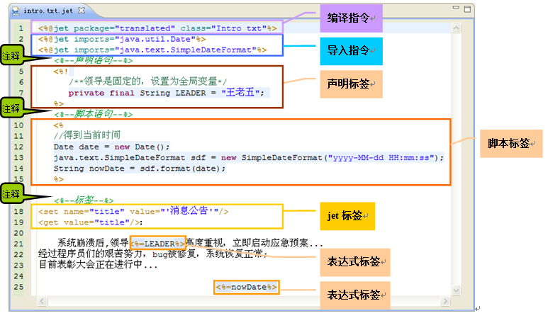
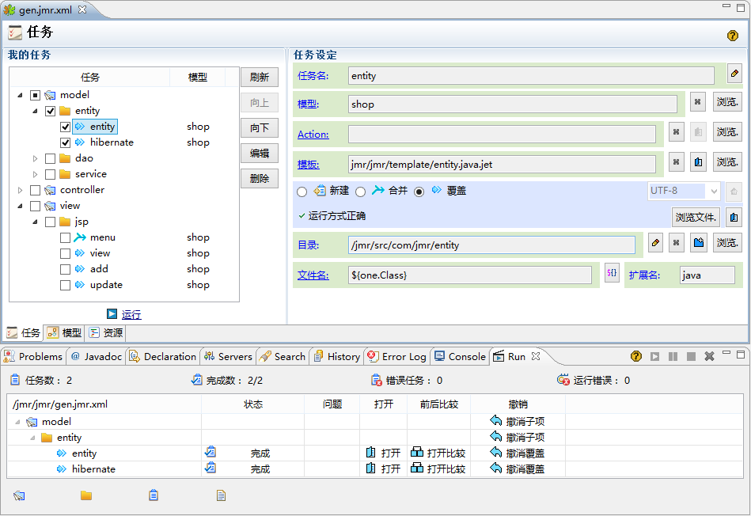

Jmr 介绍
Jmr全称Jet Model Robotization是一款基于模型驱动开发，根据自己的项目和框架编写模板，生成代码的工具。
Jmr使用Jet模板生成代码。Jet是Eclipse开源的模板引擎，它是建模工具EMF的一部分，可以像Jsp一样使用<%...%>书写模板。

Jmr的目标
让规律、重复的代码实现自动化。
为什么使用Jmr？
易学：模板类似Jsp语法，可使用Java脚本，学习成本低。
通用：任何类型的代码，测试用例、文档均可生成。
建模：可以把数据库、Xml等转换成模型，也可以使用自定义Action。模型会传给模板用于生成。
任务：可以根据自己项目的实际情况设置生成任务。
独立：任何项目、框架都可以集成，不需要改变项目结构。

Jmr的优势
- 大部分的代码生成器生成的代码固定，不能用模板改变生成内容，而Jmr可以。
- 大部分的代码生成器只能用于固定的项目，而Jmr通用，只要Eclipse的项目都能集成。
- 大部分的代码生成器只能生成固定语言的代码，而Jmr可以生成任何语言的代码、测试用例和文档。
- 相比于其它模板语言，如freemarker、velocity，类似Jsp的语法，让Jmr学习成本低。
- 完善的编辑器和任务管理，远超freemarker、velocity等的配套工具。
- 不仅仅是模板语言和代码生成，吸收了模型驱动开发的优势，是任务+模型+模板的结合。
Jmr能给我带来什么？
项目中，有些模块的代码是有规律、重复的，开发者花费大量的时间在"复制"、"粘贴"上。
使用Jmr后，这些有规律、重复的代码写成模板，可以实现批量自动化生成；
大大提高了开发效率，让开发者把精力放到技术难点和业务需求上。
拿Java Web项目当例子，以下部分存在大量重复、并且有规律的代码，：
- Java实体类
- struts/spring/hibernate的配置文件
- dao/service/action的实现代码
- jsp的增删查改页面
原本都需要手写的部分，现在使用Jmr写成模板。把数据库表转换成模型，即可生成很多模块，比如增删查改等。